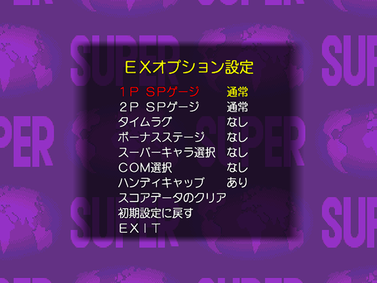
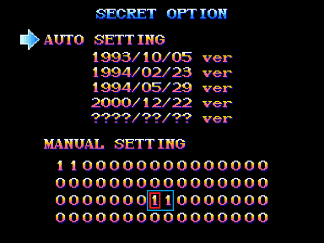
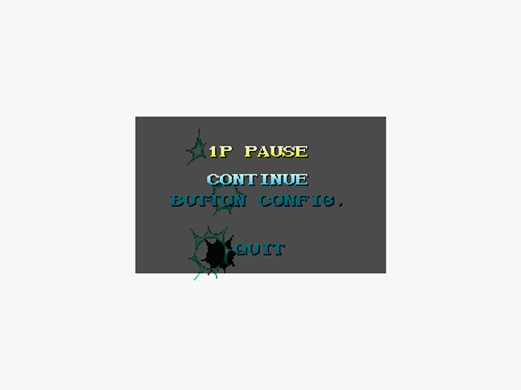
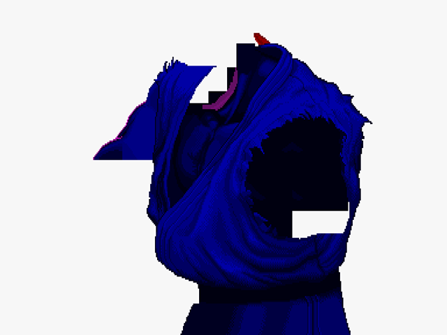
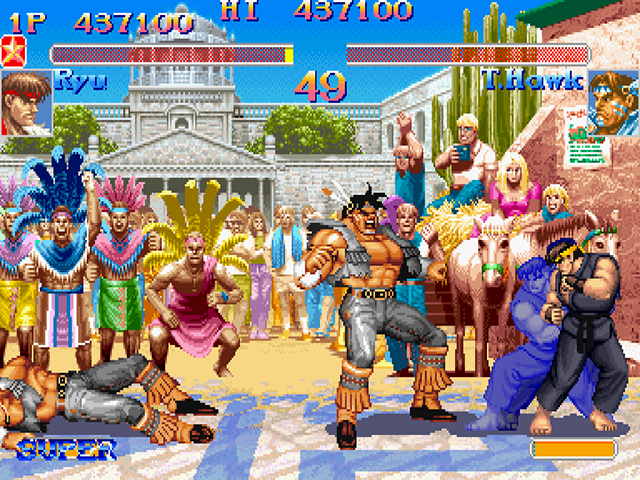

|
|
Artigos
/ ssf2x_dc
(Super Street Fighter IIX, Dreamcast)

Extra Options
Pressione L (Z no Controle Arcade) do Options então aperte A.

Player 1, Player 2 Super Gauge
Command Input Delay
Bonus Rounds
VS. Mode Super Character Selector
VS. Mode Human/Computer Selector
VS. Mode Damage Handicap
Reset High Scores
Reset to Defaults
Raging Glitch
Versão do Dreamcast possui 3 Akumas:
Akuma 1
Na tela de seleção de personagem, pressione START e logo
depois 3xP.
Versão Arcade
Para as proximas versões é preciso ter o Dip Switch Menu
desbloqueado, pressione Y em cima do Options então Start. Vermelho para o
Skin Akuma, Azul para o Tien.

Akuma 2
Na tela de seleção de personagem, pressione START e logo
depois 3xK.
Skin, Duplo Hadouken no Ar
Akuma 3
Na tela de seleção de personagem, pressione START e logo
depois MP +
HP + MK + HK.
Tien, Igual ao Skin + SUPÈR
É bem simples, com o Akuma 3, no meio do Raging Demon (LP, LP, 6, LK, HP),
aperte START e saia do jogo. Por alguma razão, parte dos Sprites ficam
corrompidos, desde a Opening até o GamePlay em si, o efeito só acaba depois
que o Akuma 3 executar outro SP ou HARD RESET.



|
|